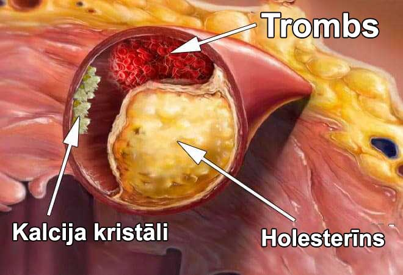
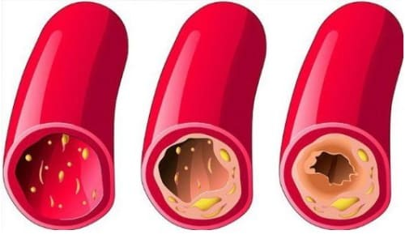
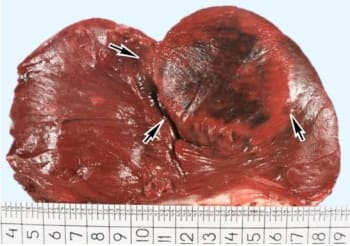
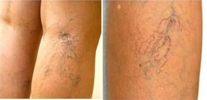

Vecums nav šķērslis dzīvei! 105 gadus vecais akadēmiķis padalījās ar savu ilgās dzīves un teicamās veselības noslēpumu.
Pazīstams japāņu speciālists kardioloģijas jomā, izgudrotājs, profesors, Nobela prēmijas Areta Tanaka aizgāja pensijā 90 gados, tomēr ne dvēselē, ne fiziski par pensionāru viņš nekļuva. Vairāk nekā 10 gadus, būdams pensijā, Areta Tanaka turpina rakstīt darbus kardioloģijas jomā. Tagad akadēmiķim ir 105 gadi, bet izskatās un jūtas viņš uz 60.
Areta Tanaka saka, ka ilga mūža noslēpums ir asinsvados. Ja tie ir tīri un veseli, tad var vienkārši nodzīvot 120 gadus un pat vairāk, pie tam justies pilnīgi veselam. Pagaidām bijušais speciālists kardioloģijas jomā apstiprina savus izteikumus.
Mūsu korespondentam bija iespēja intervēt ilgdzīvotāju. Areta Tanaka sīki izklāstīja savu metodi asinsvadu attīrīšanai un dzīves pagarināšanai.
Korespondents: Tanaka kungs, jūs vairākkārt esat apgalvojis, ka tīri asinsvadi ir veselības pamats. Kādēļ jūs tā uzskatāt?
Areta Tanaka: Tas ir vienkārši. Visu iekšējo orgānu un sistēmu darbs ir atkarīgs no asinsrites kvalitātes. Jo, kas ir asinsrite – tā ir skābekļa un barības vielu piegāde, kā arī oglekļa dioksīda un apmaiņas produktu piegāde iekšējiem orgāniem. Bērnībā, pusaudžu gados, jaunībā mēs daudz kustamies, asinsvadi mums ir jauni, elastīgi, tīri – visu orgānu barošana ir maksimāla. Tomēr ar vecumu mēs kustamies arvien mazāk, un mūsu asinsvadi sāk piesārņoties. Tas ir saistīts ar dažādiem faktoriem - ne tikai kaitīgiem (kā, piemēram, smēķēšana, neveselīgs uzturs, ekoloģija, mazkustīgs dzīvesveids), bet arī pilnīgi dabiskiem (lipīdu nogulsnēšanās, piemēram, kas notiek visiem).

Bet kas ir piesārņoti asinsvadi? Iedomājieties caurules, kas pildītas ar rūsu. Kas galu galā notiek? Rezultātā pieaug ūdens spiediens, bet pats ūdens kļūst negaršīgs. Tas pats notiek ar asinsvadiem. Kad uz tiem tiem nogulsnējas holesterīns vai citas vielas, paaugstinās asinsspiediens (netīri asinsvadi ir galvenais hipertensijas iemesls!), pašas asinis sanāk ar piemaisījumiem, asinsrite kļūst ne tāda, kādai tai vajadzētu būt. Rezultātā cieš visi orgāni un sistēmas, un tie visi sastāda cilvēku. Jo pat āda – tā ir noteikta sistēma.
Foto no Tanaka kunga pēdējās uzstāšanās.
Galu galā cilvēks sāk novecot. Bet ja periodiski tīrīt asinsvadus, tad var nodzīvot kaut līdz 120 gadiem. Un turklāt jums nekas nesāpēs – nekādi orgāni, un labi strādās smadzenes. Tas ir, ar asinsvadu tīrīšanu var lielā mērā pagarināt savu dzīvi un veselību. Un tā nav tikai teorija. Savulaik es ieteicu to saviem pacientiem, un tagad piekopju arī pats. Visi, kas savulaik ieklausījās manos padomos, sen jau pārdzīvojuši savus vienaudžus.

Tā notiek pakāpenisks asinsvadu piesārņojums. Ja jūs ne reizi tos neesat tīrījis un jums jau ir vairāk nekā 40 gadu, tad asinsvadi jums ir ļoti piesārņots. Drīz tas ietekmēs jūsu veselību, ja jau nav ietekmējis.
Korespondents: Pie kādām tieši patoloģijām ved acs asinsvadu piesārņojums?
Areta Tanaka: Kā jau teicu, no tā cieš viss organisms kopumā. Bet, protams, vispirms cieš tie orgāni un sistēmas, kas ir tieši saistīti ar asinsriti – tas ir, pati sirds un asinsvadu sistēma.
Asinsvadu piesārņojums izraisa tādas slimības kā:
- Aterosklerotiskā asinsvadu slimība. Asinsvadi pavisam pārstāj funkcionēt: sīkie asinsvadi nosprostojas pilnībā, bet lielajos ir novērojamas lielas holesterīna nogulsnes.
- Koronārā sirds slimība. Rodas no regulāra asins deficīta koronārajos asinsvados, kas savukārt attīstās uz asinsvadu piesārņojuma fona.
- Insults. Stipru smadzeņu audu asinsapgādes traucējumu dēļ sākas nervu galu atmiršana, kas ved pie dažu funkciju zaudēšanas.
- Hipertonija. No asinsvadu diametra samazināšanās piesārņojuma dēļ paaugstinās asinsspiediens.
- Varikozas vēnas. Notiek ne tikai uz kājām (kas bieži vien uztrauc sievietes), bet arī organisma iekšienē. Kā viena no varikozo vēnu sekām – hemoroīds.
- Vēnu un artēriju trombozes. Ilgstoša asinsvadu piesārņojuma dēļ var izveidoties trombs, kas izraisa pilnīgu asinsvada bojāeju, kas, savukārt, var novest pie atsevišķu šūnu atmiršanas kādā no orgāniem. Ja trombs atrausies un nonāks asinīs, tas var izraisīt asinsvadu aizsprostošanos sirdī - un tas ir infarkts, kas 70% gadījumu beidzas ar nāvi.
Lai jūs novērtētu visu asinsvadu piesārņojuma bīstamību un to, cik ļoti netīri asinsvadi saīsina dzīvi un pasliktina veselību, gribu parādīt dažas fotogrāfijas.
Sievietes sirds, pēc nāvīga miokarda infarkta
Insults vīrietim 53 gadi. Insults VIENMĒR izraisa invaliditāti - cilvēki vairs nevar iztikt bez citu palīdzības. Iemesls – asinsvadu nosprostojums.
Varikozas vēnas, no kurām cieš daudzas sievietes, arī ir tiešas asinsvadu piesārņojuma sekas.
Kas līdzīgs notiek visur! Latvijā no sirds un asinsvadu slimībām mirst 4 reizes vairāk cilvēku nekā no visiem pārējiem cēloņiem kopā. Ārsti par to zina, zina, ka jātīra asinsvadi, bet nez kāpēc tādas prakses nav Latvijas medicīnā. Daudzi ārsti hipertonijas gadījumā izraksta tabletes, spiediena mazināšanai. Tomēr tās neārstē, tās dod īslaicīgu efektu. Bet vajag tieši tīrīt asinsvadus. Starp citu, Šveicē ar to nodarbojas visi cilvēki pēc 35-40 gadiem jau vairāk kā pusgadsimtu. Par asinsvadu tīrīšanu tur zina visi. Kāpēc pie mums nē – tas paliek liels jautājums.
Korespondents: Vai ir kādi simptomi, pēc kuriem var saprast, ka asinsvadi ir piesārņoti?
Areta Tanaka: Jā, protams.
Pie galvenajiem simptomiem var pieskaitīt:
- Migrēnas
- Atmiņas pasliktināšanos
- Hronisku nogurumu
- Bezmiegu
- Problēmas intīmajā sfērā
- Redzes un dzirdes pasliktināšanos
- Paaugstinātu asinsspiedienu
- Elpas trūkumu un stenokardiju
- Bālu kāju ādu
- Sāpes muskuļos un locītavās
Tomēr, pat ja jums nav šo simptomu, asinsvadu tīrīšanu vienalga jāveic vismaz reizi 5 gados pēc 30 dzīves gadiem. Šajā gadījumā veselība būs vienkārši varoniska.
Patiesībā asinsvadi ļoti ātri piesārņojas, it īpaši vecākiem cilvēkiem. Priekš tā pavisam nav nepieciešams caurām dienām ēst burgerus vai frī kartupeļus. Pietiek apēst vienu cīsiņu vai ceptu olu, lai kāds holesterīna daudzums nogulsnētos asinsvados. Ar laiku piesārņojums uzkrājas.
Korespondents:Vai jūs varētu izstāstīt savu noslēpumu asinsvadu attīrīšanai?
Areta Tanaka: Līdz nesenam laikam asinsvadu attīrīšanas process man aizņēma dažus mēnešus. Es pats vāca augus, meklēja tos tirgū vai ir pasūtīju internetā, un pēc tam gatavoju no tiem novārījumus. Tagad to nedaru, jo nesen mani kolēģi no Latvijas kardioloģijas institūta izgudroja ļoti labu un lētu produktu, kas paredzēts asinsvadu attīrīšanai. Latvijā tas saucas . Vispār tas ir paredzēts asinsspiediena normalizēšanai un hipertensijas ārstēšanai, bet šī normalizēšana notiek pateicoties asinsvadu attīrīšanai. Tāpēc mūsu mērķiem tas ir ideāli piemērots.
ir ļoti labs līdzeklis, kas ļauj attīrīt pat ļoti piesārņotus asinsvadus par 2-4 nedēļām regulāras lietošanas. Vēl gribu atzīmēt, ka šis preparāts nesatur ķīmiju, tikai stipri koncentrētus izvilkumus no asinsvadu attīrīšanai piemērotiem augiem, tāpēc tas ne tikai nav kaitīgs organismam, bet pat ļoti veselīgs. Seno dienu vārdā pie manis vēl vēršas klient , tajā skaitā arī asinsvadu attīrīšanai. Pēdējā laikā es iesaku tikai šo produktu. Tas palīdz visiem un ļoti labi.
Latvijā līdzekli lieto aptuveni gadu, tāpēc ir oficiāla asinsvadu attīrīšanas statistika Latvijas Kardioloģijas institūta mājas lapā, kas tika saņemta klīnisko pētījumu rezultātā. Kopumā pētījumā piedalījās ap 2000 klientu. Viņi visi lietoja kursu.
Pētījumu rezultāti, cilvēki terapijas kursa lietošanas laikā:
- Spiediena normalizēšanās pēc 1-2 produkta lietošanas dienām – 99% aptaujāto
- Normalizē sirds ritmu kursa laikā – 97% aptaujāto
- Pilna asinsvadu attīrīšana no holesterīna kursa laikā – 99% aptaujāto
- Hronisku slimību ārstēšanas efektivitātes paaugstināšana – 99% aptaujāto
- Veselības uzlabošana kopumā – 100% aptaujāto
- Nekādu blakusparādību no produkta lietošanas – 100% aptaujāto
Svarīgs! Pētījumu rezultātā noskaidrots, ka ir labākais laiks ārstēšanas uzsākšanai. Sakarā ar vidējās temperatūras stabilizēšanos organismā tiek paātrināti vielmaiņas procesi, pastiprinās produkta lietošanas efekts. Veselības uzlabošanās ir par 37% straujāka nekā citos gadalaikos
Korespondents: Cik maksā , un kur to var iegādāties?
Areta Tanaka: Jūs droši vien zināt, ka es pats esmu pensionārs un priekš manis daudzi produkti tagad ir dārgi. Tāpēc es neieteiktu dārgu līdzekli. ir ļoti izdevīgs produkts, īpaši tagad, kad produkts ir kļuvis par galveno hipertensijas programmas balstu Latvijā.
Nosacījumi iegūšanai programmas ietvaros:
- Dzīvo dalības reģionā (Latvija)
Atlaidi var izmantot tikai to reģionu iedzīvotāji, kuros šobrīd darbojas atlaižu programma - Tikai personiskai lietošanai
Tas ir nepieciešams, lai cīnītos ar tālākpārdevējiem, kuri cenšas masveidā iegādāties un pārdot to tālāk par savu uzcenojumu. - Piesakieties, izmantojot programmas oficiālo vietni
vai pieteikuma veidlapu
Oficiālā vietne ir ražotāja cenas garantija un aizsardzība no tālākpārdevējiem
Šīs programmas ietvaros tiek izplatīts ar 50% atlaidi, pateicoties kam ikviens Latvijas iedzīvotājs var iegādāties preci un aizmirst par hipertensiju un augstu asinsspiedienu uz visiem laikiem! Lai piedalītos akcijā un pasūtītu ar atlaidi, jāatstāj pieteikums oficiālajā veidlapā līdz . Pieteikumus var iesniegt personas, kuras dzīvo Latvijas teritorijā un cieš no jebkādām hipertensijas izpausmēm.
Pievienots pirms 12 stundām | Redaktora piezīme: Svarīgas ziņas! Šobrīd programma Latvijā un reģionā darbojas līdz ieskaitot. Līdz akcijas beigām oriģinālo produktu var pasūtīt caur oficiālo vietni ikvienam ar atlaidi ! Šobrīd Latvijā ir saglabājies akcijas paku atlikums: 43 gab.
Korespondents: Liels paldies jums, Tanaka kungs par tik detalizētu interviju.
Galvenā redaktora piezīme: Jau personiskā sarunā Tanaka atzinās, ka vēl joprojām stāda visu vasarnīcā un palīdz bērniem, kuri arī jau ir pensionāri. Viņa sieva arī ir ilgdzīvotāja – viņai ir 99 gadi. Tīra asinsvadus viņi abi katru gadu. Ja to nedarītu, tad, kā uzskata akadēmiķis, jau sen būtu miruši, tāpat kā visi viņu vienaudži.
Komentāri
Maiga Vilciņš
Bija hipertensija, bija un izbija...10 dienu laikā viss pārgāja! Paldies par to!
 Airika
Ozoliņš
Airika
Ozoliņš
Atbalstu! Ļoti efektīvs līdzeklis no problēmām ar spiedienu! Tagad ir stabili 120 uz 80.
Domantas Vaškys
Paldies ražotājam par ! Pamēģināju, tiešām kļuva vieglāk. Paskatīsimies, kas būs pēc nedēļas. Pagaidām vēl ir par agru runāt, vēlāk uzrakstīšu. Bet spiediens vairs nelēkā, pat nejūtu to. Tādēļ es domāju, ka viss būs labi!
Bemadita Saulīte
Neuztraucieties un turpiniet lietot . Galvenais,
sekojiet norādījumiem produkta lietošanas
instrukcijā.
Bernārs Lazovskis
Tauta, palīdziet! Esmu noguris jau no spiediena lēcieniem. Diskomforts un sāpes nedod dzīvot. Jau vienkārši nezinu, ko darīt. Dzeru dažādas zāles regulāri, bet tās nepalīdz(((
Vincents Saulīte
Tā tu ņem , nenožēlosi. Pašam problēmas bija spiediena dēļ, līdz pat mikroinfarktiem. Paldies mātei, ka atrada un piespieda to izmantot. Starp citu, pirka pirms pusgada, bez visādām atlaižu programmām oficiālajā mājas lapā (un cena bija viņam pieklājīga, visu algu atdeva par kursu). Toties tagad problēmu ar asinsspiedienu vispār nav, un kustos mierīgi. Tici man, ņem, un viss izdosies, redzēsi!
Beāta Blaumanis
Kā pasūtīt ?
Karens Dumpji
Beāta Blaumanis
Karens, jā, paldies jums, jau pasūtīju, bet vari pateikt cik ilgi to piegādā?
Karens Dumpji
Beāta, aptuveni 3 dienās atnāks)
Luīza Dāles
Pasūtīju savai māsai ražotāja vietnē vēl mēnešus divus atpakaļ. Viņa ilgi mocījās no spiediena. Ja jūs zinātu, kā viņa mani pēc tam pateicās, ka es viņai atnesu
Augmants Jankevics
Vai tiešām rezultāts ir tik efektīvs? Droši vien ir vērts arī man izmēģināt.
Stasija Lejiņš
Es arī kaut kur pa ausu galam dzirdēju. Kāds no paziņām liekas pasūtīja sev. Pašai ir problēmas ar spiedienu jau otro gadu, tagad izlasīju - pat bailīgi kļuva. Noformēšu pasūtījumu gribu izmēģināt.
Einis Siliņš
Redzu ne tikai man ir problēmas, bet, paldies dievam, ka es atradu līdzekļa ražotāja mājas lapu kaut kur mēnesi atpakaļ. Viņš izglāba mani no hipertonijas, tik ātri kā nevarēja to izdarīt desmitiem zāļu un produktu!
Ronijs Saulīte
Sakiet tauta, tas tiešām palīdzēs? Jo no zālēm un ārstiem nekādas jēgas
Janīna Liepiņš
Neapšaubāmi. Efekts tam ir ļoti spēcīgs un pats galvenais, ka veselībai vispār nekaitē. Tā kā pasteidzies izmēģināt! man pilnīgi palīdzēja atbrīvoties no problēmām ar spiedienu.
Saulgaida Gailītis
Paldies, ļoti ātri palīdzēja! Pasūtīju tieši ražotāja oficiālajā ražotāja vietnē! Nevelciet ar ārstēšanu, labāk tikt vaļā no šīm problēmām ar spiedienu tagad, nekā vēlāk nokrist un saprast, ka vairs nekad nespēsi kustēties.
Janīna Liepiņš
Paldies. Ja ne jūs, tad es neticētu līdzekļa efektivitātei! Es vairāk kā 5 gadus nodzīvoju ar vīru, kuram ir hipertonija. Mocījās briesmīgi. Bet tagad mundrs skraida, it kā viņam būtu 18 atkal.
P. S. sūtījumu piegādāja ļoti ātri!
Bemadita Saulīte
Janīna, nevajag pateikties. Pastāstiet, lūdzu, cik ilgi
terapija prasīja?
Janīna Liepiņš
Bemadita, apmēram 15 dienas, pēc 20 dienām, es vispār pārstāju manīt, lai viņam spiediens lēkātu.
Bemadita Saulīte
Janīna, sapratu, paldies.
Zinda Krieviņš
Rezultāts vienkārši pārspēja manas cerības. Spiediens pārstāja lēkāt 6 dienās! Pasūtīju vēl dažus iepakojumus savām draudzenēm.
Cezarija Jurēvics
Pirku sev vēl pirms, spiediens mocīja briesmīgi jau vairākus gadus. Katru reizi, kad lietus vai laikapstākļu maiņa - vienkārši neiedomājami, no kājām gāž. palīdzēja pāris nedēļās. Nevarēju pat iedomāties, ka tas ir iespējams.
Viorika Jankevics
Mūsu paziņam privātajā aptiekā pārdodas 10 reizes dārgāk, tādēļ vilcinājos iegādāties, naudas bija žēl. Bet te ieraudzīju cenu un uzreiz pasūtīju, jo ar 50% atlaidi. Spiediens gandrīz vairs nelēkā, bet laiks pagājis pavisam nedaudz.
Bemadita Saulīte
Tomēr aptiekas arī mēģina ar to tirgot. Tā ir zaimošana, tā
iedzīvoties uz cilvēkiem. Tagad mēs sekosim, kur un kam
sūtam produktu.
Tālrita Švarcbahs
Dzeru jau pusgadu (draudzene atveda no kurienes pat nezinu). Es atbrīvojos no hipertensijas kaut kādās divās ar pusi nedēļās, un tagad pastāvīgi turu mājas aptieciņā, katram gadījumam.
Marts Kalniņš
Arī pasūtīju sev no oficiālās mājas lapas. Palīdzēja perfekti. Ja jums ir problēmas ar spiedienu - ļoti iesaku, ticiet man - viss, kā ar roku noņemas. Izrādījās taisnība atlaidi, un piegādā ātri, man tikai 3 dienās atnāca.
Bemadita Saulīte
Diemžēl šeit neko nevar izdarīt. Produkta izstrāde prasīja
daudz laika, tika ieguldīti daudz naudas. Bet pēc tik ilga
laika cilvēki var ātri atbrīvoties no spiediena
problēmām.
Rugilė Žukė
Izlasīju rakstu un uzreiz nolēmu pasūtīt, lai izmēģinātu. Lieta tāda, ka parastās zāles man palīdzēja uz neilgu laiku — hipertoniju, kā man teica, ir grūti izārstēt. Tagad rakstu par rezultātiem. atnāca ļoti ātri. Jau pirmajā dienā jūtu tādu atvieglojumu, ka vienkārši nevarēju neuzrakstīt šeit par to. Liels paldies, tagad vismaz varēšu normāli dzīvot!
Centolla Lācītis
Cilvēki sakiet, kur jūs pasūtat? Aptiekās tāds līdzeklis nepārdodas, un internetā pirkt bail. Negribētos uzdurties viltojumam, kā es saprotu, nekādas jēgas nebūs.
Bemadita Saulīte
Vēlreiz atkārtošu, ka Friocard var pasūtīt TIKAI oficiālajā mājas
lapā, lai
nekļūdītos, vienkārši noklikšķiniet uz saites, kas ir
nedaudz augstāk! Atlaižu programmas ietvaros var
pasūtīt ar 50% atlaidi, bet programma darbosies tikai
līdz
ieskaitot, tā ka pasteidzieties ar
pasūtījumu!
Un uzmanieties, lūdzu, no
viltojumiem.
Skaidre Krieviņš
Esmu jums tik pateicīga par informāciju par šo līdzekli. Jau sen meklēju sev kaut ko līdzīgu. Ar nepacietību gaidu sūtījumu! Paldies!